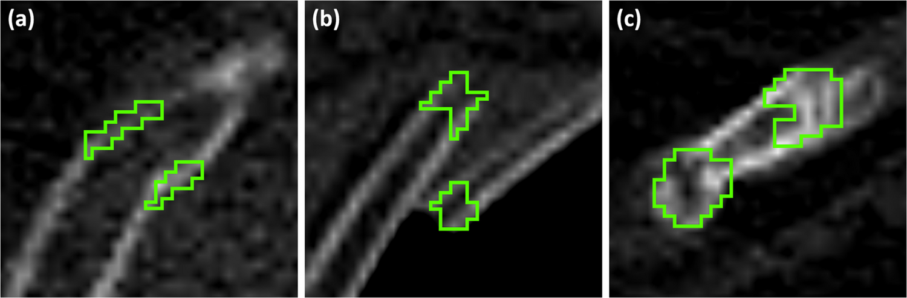
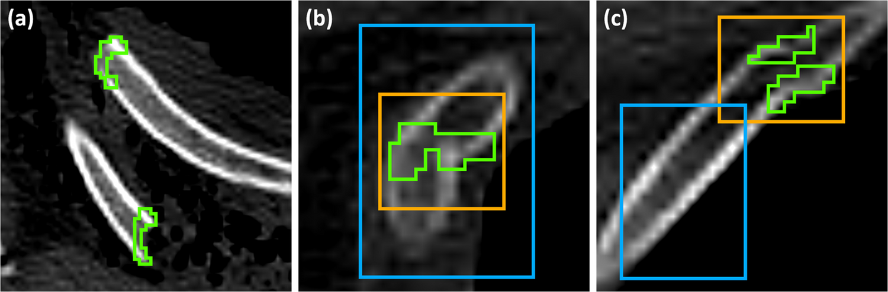
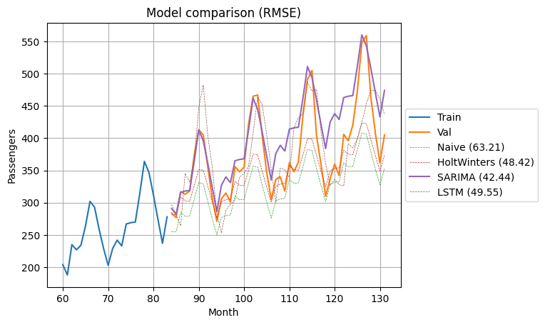
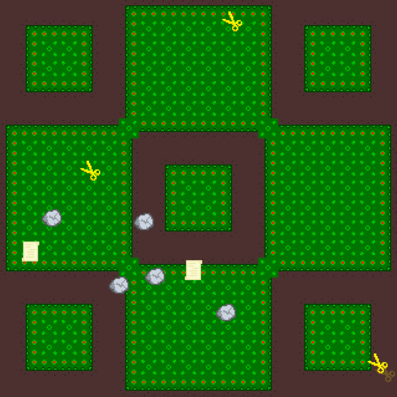
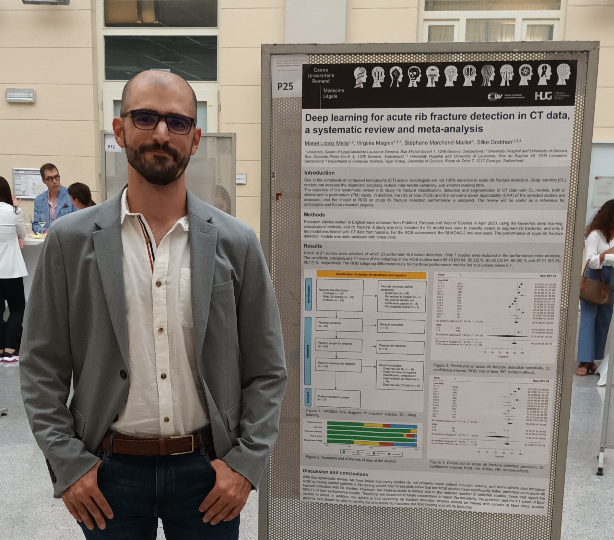

Personal Projects
Deep learning for rib fracture detection in postmortem CT scans
This is my second publication as Research Assistant in the University of Geneva. I used an existing object detection model, nnDetection, to detect rib fractures in postmortem CT scans. I compared the results to the same model trained with a clinical CT scan dataset to identify the main factors of domain shift between clinical and postmortem CT data.
- Python
- PyTorch


Time-series analysis on Air Passengers dataset
In this project, I have explored the main models that exist for time-series analysis, from ARIMA models to an LSTM.
- Python
- PyTorch
- Scikit-learn


Videogame inspired by Rock-Paper-Scissors
In order to develop my OOP with Python, I have followed a PyGame tutorial by DaFluffyPotato and developed a videogame based on Rock-Paper-Scissors.
- Python
- Pygame
- OOP

Work Experience
About
I have studied Mathematics and Physics in the Universitat Autònoma de Barcelona, where I have discovered my passion for Statistics, Data Analysis and programming. With experience as a Data Scientist at HelloFresh, in London, and as a Deep Learning Research Assistant at the University of Geneva, I am always thrilled to develop my problem-solving skills with new data challenges.
My Resume